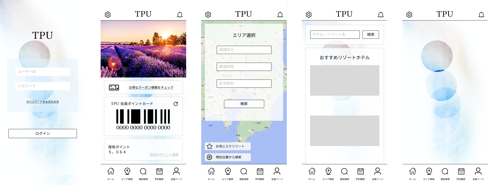
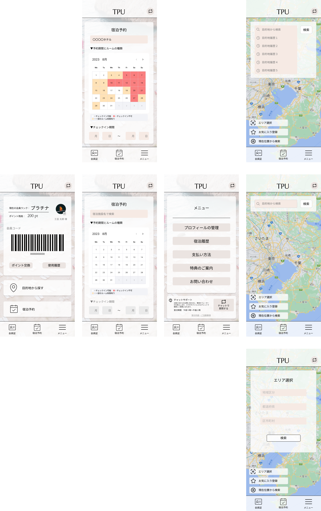

<DOCTYPE html>
    <html lang="ja" deta-theme="light">
   
   <head>
       <meta charset="UTF=8">
       <meta name="viewport" content="width=device-width, initial-scale=1">
       <link rel="stylesheet" href="css/pico.min.css">
       
       <title>index01</title>
   
       <link rel="preconnect" href="https://fonts.googleapis.com">
       <link rel="preconnect" href="https://fonts.gstatic.com" crossorigin>
       <link href="https://fonts.googleapis.com/css2?family=Zen+Maru+Gothic&display=swap" rel="stylesheet">
   
       <style>
        h1{
          text-align:center;
        }
        P{
          text-align:center;
          font-family: 'Zen Maru Gothic', sans-serif;
        }
        li{
          font-family: 'Zen Maru Gothic', sans-serif;
        }
    
        </style>
   </head>

   <body>

    <main class="container">

      <P><br>2224043</P>

      <h1><P>【作品１】アプリホーム画面</P></h1>

      <nav aria-label="breadcrumb">
        <ul>
          <li><a href="index.html">Home</a></li>
          <li><a href="index01.html">作品１</a></li>
          <li><a href="index02.html">作品２</a></li>
          <li><a href="index03.html">作品３</a></li>
          <li><a href="index04.html">作品４</a></li>
          <li><a href="index05.html">作品５</a></li>
          <li><a href="index06.html">作品６</a></li>
        </ul>
      </nav>

      <div>
        <P><br><b>最初にデザインしたプロトタイプ</b><br>シンプルで見やすいデザインを目指しました。</P>
        <article></article>
      </div>

      <div>
        <P><br><b>プレゼンで提出したプロトタイプ</b><br>
          <li>ターゲット層&emsp;40代50代あたりの中年層</li>
          <li>イメージ&emsp;&emsp;&emsp;目に優しいデザインと毎日の忙しい日々から離れた落ち着いた雰囲気</li>
          <li>工夫した点&emsp;&emsp;統一されたシンプルさを出すために使う色を減らしたのとボタンやフレームの種類を揃えたこと</li>
        </P>
        <article></article></div>


      <nav aria-label="breadcrumb">
          <ul>
            <li><a href="index.html">Home</a></li>
            <li><a href="index01.html">作品１</a></li>
            <li><a href="index02.html">作品２</a></li>
            <li><a href="index03.html">作品３</a></li>
            <li><a href="index04.html">作品４</a></li>
            <li><a href="index05.html">作品５</a></li>
            <li><a href="index06.html">作品６</a></li>
          </ul>
      </nav>

    </main>


</body>
